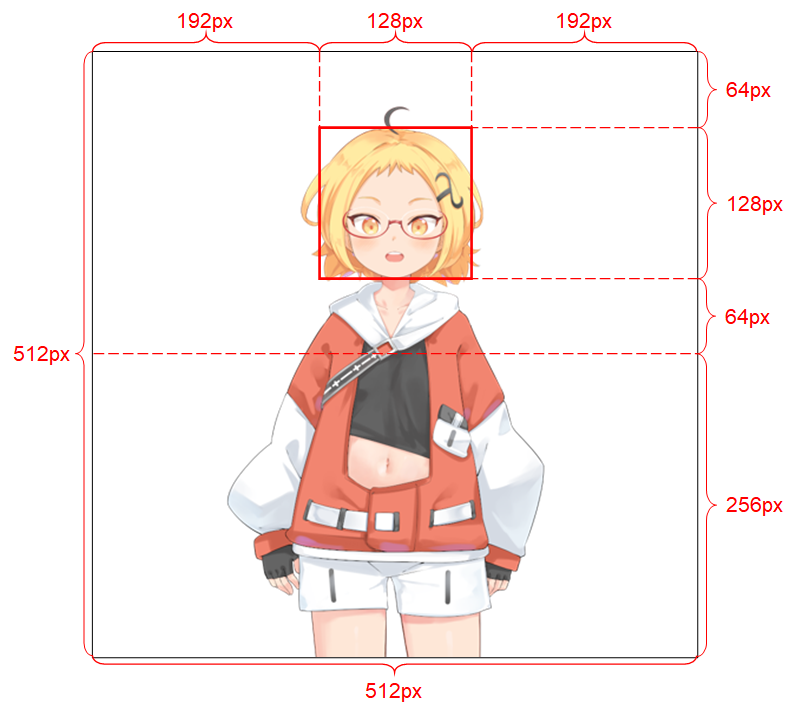

Talkinghead
SILLYTAVERN 1.12.13 版本已停止支持 TALKINGHEAD。本页面仅作历史记录保留。
它是什么？
这是为 AITuber 实现的 Talking Head Anime 3 Demo。它具备以下功能：
- 从单张静态图像生成随机的类 Live 2D 动作。
- 与任意 TTS 输出的声音进行口型同步。
此扩展包含"Talking Head(?) Anime from a Single Image 3: Now the Body Too"项目的原始演示程序。顾名思义，该项目允许您为动漫角色制作动画，而且只需要该角色的一张图像即可。共有两个演示程序：
manual_poser 让您通过图形用户界面操控角色的面部表情、头部旋转、身体旋转以及因呼吸引起的胸部起伏，从而将其保存为默认表情，例如：开心、悲伤、喜悦等。 ifacialmocap_puppeteer 让您将自己的面部动作传输到动漫角色上。
硬件要求
您可以使用 CPU 或 GPU 模式（默认为 CPU）。但在 CPU 模式下，预计约为 1 FPS；在 GPU 模式下（RTX 3060），约为 9-10 FPS。
ifacialmocap_puppeteer 需要一台能够从视频流计算混合形状参数的 iOS 设备。这意味着该设备必须能够运行 iOS 11.0 或更高版本，并且必须具有 TrueDepth 前置摄像头。（有关更多信息，请参阅此页面。）换言之，如果您有 iPhone X 或更好的设备，应该就可以了。
如何使用
您必须使用以下模块启动 Extras，Talkinghead 才能正常工作：classify 和 talkinghead！
classify 是处理 talkinghead.png 文件所必需的。此外，您还可以使用 --talkinghead-gpu 将混合模型加载到 GPU 内存中，使动画速度提升 10 倍。强烈建议使用 GPU 加速！默认情况下，程序启动后将加载默认图像 SillyTavern-extras\talkinghead\tha3\images\lambda_00.png。您可以通过访问 http://localhost:5100/api/talkinghead/result_feed 或 您的外部URL:端口/api/talkinghead/result_feed 来验证它是否正常工作。
-
服务器启动后，进入"Extension API"标签页并连接。然后只需选择一个角色卡加载即可。（启动 server.py 时使用
--enable-modules=classify,talkinghead --talkinghead-gpu） -
现在选择"角色表情"，如果您勾选了 talkinghead 图像类型复选框，脚本将用
您的外部URL:端口/api/talkinghead/result_feed的结果替换您当前的角色表情。取消勾选该复选框应该会将图像恢复为原始表情，但有时您需要向聊天发送新消息才能"重新加载"图像。 -
如果角色目录中没有 talkinghead.png 文件，它将简单地显示默认图像或最后一个拥有 talkinghead.png 文件的角色卡。切换角色卡时，动画源图像也会随之更改。
-
现在打开角色表情，向下滚动到 Talkinghead 图像，并上传一个满足下方"输入图像限制条件"部分要求的图像文件。
-
然后勾选再取消勾选 Talkinghead 复选框以重新加载角色。如果图像看起来很奇怪，可能是因为它没有透明背景/没有 Alpha 通道。否则，请按照以下说明和模板操作。
输入图像限制条件
为使系统正常工作，输入图像必须遵守以下限制条件：
分辨率必须为 512 x 512。（如果程序收到任何其他尺寸的输入图像，它将把图像缩放至此分辨率，并以此分辨率输出。） 必须具有 Alpha 通道。 必须只包含一个人形角色。 角色应直立站姿并面向正前方。 角色的双手应位于头部下方并远离头部。 角色的头部应大致包含在图像上半部分中央的 128 x 128 方框内。 所有不属于角色的像素（即背景像素）的 Alpha 通道值必须为 0。

高级部分
Python 环境
除了基础功能（app.py）之外，manual_poser 和 ifacialmocap_puppeteer 也可作为桌面应用程序运行。要运行它们，您需要搭建一个用于运行 Python 程序的环境。该环境需要具备以下软件包：
- Python >= 3.8
- PyTorch >= 1.11.0（支持 CUDA）
- SciPY >= 1.7.3
- wxPython >= 4.1.1
- Matplotlib >= 3.5.1
一种实现方法是安装 Anaconda，然后在 shell 中运行以下命令：
conda create -n talking-head-anime-3-demo python=3.8 conda activate talking-head-anime-3-demo conda install pytorch torchvision torchaudio cudatoolkit=11.3 -c pytorch conda install scipy pip install wxpython conda install matplotlib
附加混合模型
默认只包含一个（最轻量的）模型，如果您需要额外的混合模型，则需要从 https://www.dropbox.com/s/y7b8jl4n2euv8xe/talking-head-anime-3-models.zip?dl=0 下载模型文件，并将其解压到 SillyTavern-extras\talkinghead\tha3\models 文件夹。最终，数据文件夹应如下所示：
- tha3
- models
- separable_float
- editor.pt
- eyebrow_decomposer.pt
- eyebrow_morphing_combiner.pt
- face_morpher.pt
- two_algo_face_body_rotator.pt
- separable_half
-
- editor.pt
- two_algo_face_body_rotator.pt
-
- standard_float
-
- editor.pt
- two_algo_face_body_rotator.pt
-
- standard_half
-
- editor.pt
- two_algo_face_body_rotator.pt
-
- separable_float
- models
模型文件以知识共享署名 4.0 国际许可证分发，这意味着您可以将其用于商业目的。但是，创建者为 Pramook Khungurn，《Talking Head(?) Anime from a Single Image 3: Now the Body Too》，https://github.com/pkhungurn/talking-head-anime-3-demo。
运行 manual_poser 桌面应用程序
打开 shell。将工作目录更改为仓库的根目录。然后运行：
python tha3/app/manual_poser.py 请注意，在运行上述命令之前，您可能需要激活包含所需软件包的 Python 环境。
conda activate extras （如果您尚未激活该环境）。